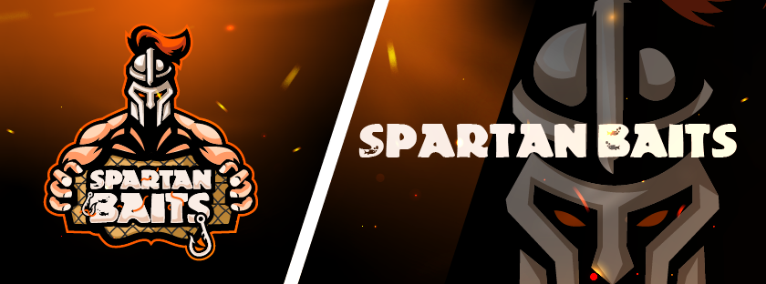

About Us
We are Spartan Baits. A company created by two best friends who love fishig and thought making their own baits would be fun and enjoyable and soon it because a big hobby and we wanted to make into a small business!
We sell a variety of soft plastics, in a handful of colors that are guaranteed to work year round, tested and prove. Our goal is to create the highest quality custom soft plastics for those who are interested! We hope you enjoy browsing our site - Webpage
